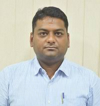

Computer Science & Engineering
B.E/B.Tech-> CSE->Intake:180->Fee: 95000
H.O.D(Head Of the Department)
Name : Dr Akhil Khare
Designation:Professor & HOD
Academic Qualifications:B.E, M.Tech,Ph.D
Email: hod_cse@mvsrec.edu.in & khare_cse@mvsrec.edu.in
Area of interest: Artificial Intelligence, Cloud Computing
Subjects taught at U.G Level: Artificial Intelligence, Object Oriented and Multicore Programming, Operating System Design, Compiler Construction, Distributed Operating System, Computer Network , Network Security, Theory of computation
Subjects taught at P.G Level: Cloud Computing, Distributed System, Software Testing, Project Planning and Designing , Operating system design, Research Methodology
Number of Research Papers/Journals/Books published: 97
Workshops/Conference/FDP/Seminar conducted& Attended: 40
Patents: 03
copyrights: 09.
She bagged the best teacher award instituted by the MECT Two times.
She bagged the best teacher award instituted by the MECT Two times.
Computer Science and Engineering Department was started in the year 1985 with a current intake is 180. The department is supported by well qualified, dedicated and experienced staff.
Apart from the regular academic work, the department organizes guest lectures inviting expert speakers from industry and other reputed academic institutions.
VISION
To impart technical education of the highest standards, producing competent and confident engineers with an ability to use computer science knowledge to solve societal.
MISSION
To make learning process exciting, stimulating and interesting.
- To impart adequate fundamental knowledge and soft skills to students.
- To expose students to advanced computer technologies in order to excel in engineering practices by bringing out the creativity in students.
- To develop economically feasible and socially acceptable software.
PROGRAM EDUCATION OBJECTIVES (PEOs)
The Program Educational Objectives of under graduate program in Computer Science & Engineering are to prepare graduates who will:
Have strong fundamental concepts, technical competency and problem solving skills to generate innovative solutions to engineering problems.
- Continuously enhance their skills through training, independent inquiry, professional practices and pursue higher education or research by adapting to rapidly changing technologies.
Advance in their professional careers including increased technical, multidisciplinary approach and managerial responsibility as well as attainment of leadership positions thus making them competent professionals at global level.
- Exhibit commitment to ethical practices, societal contributions and lifelong learning.
(A) PROGRAM OUTCOMES(POs)
Engineering Graduates will be able to:
Engineering knowledge: Apply the knowledge of mathematics, science, engineering fundamentals, and an engineering specialization to the solution of complex engineering problems.
Problem analysis: Identify, formulate, review research literature, and analyse complex engineering problems reaching substantiated conclusions using first principles of mathematics, natural sciences, and engineering sciences.
-
Design/development of solutions: Design solutions for complex engineering problems and design system components or processes that meet the specified needs with appropriate consideration for the public health and safety, and the cultural, societal, and environmental considerations.
-
Conduct investigations of complex problems: Use research-based knowledge and research methods including design of experiments, analysis and interpretation of data, and synthesis of the information to provide valid conclusions.
-
Modern tool usage: Create, select, and apply appropriate techniques, resources, and modern engineering and IT tools including prediction and modelling to complex engineering activities with an understanding of the limitations.
-
The engineer and society: Apply reasoning informed by the contextual knowledge to assess societal, health, safety, legal and cultural issues and the consequent responsibilities relevant to the professional engineering practice.
-
Environment and sustainability: Understand the impact of the professional engineering solutions in societal and environmental contexts, and demonstrate the knowledge of, and need for sustainable development.
-
Ethics: Apply ethical principles and commit to professional ethics and responsibilities and norms of the engineering practice.
-
Individual and team work: Function effectively as an individual, and as a member or leader in diverse teams, and in multidisciplinary settings.
-
Communication: Communicate effectively on complex engineering activities with the engineering community and with society at large, such as, being able to comprehend and write effective reports and design documentation, make effective presentations, and give and receive clear instructions.
Project management and finance: Demonstrate knowledge and understanding of the engineering and management principle and apply these to one’s own work, as a member and leader in a team, to manage projects and in multidisciplinary environments.
-
Life-long learning: Recognize the need for, and have the preparation and ability to engage in independent and life-long learning in the broadest context of technological change.
(B) PROGRAM SPECIFIC OUTCOMES (PSOs)
System development: an ability to analyze a problem, design the algorithm and optimally code its solution.
-
System deployment: an ability to identify & define computing requirements to test, implement and maintain a software product.